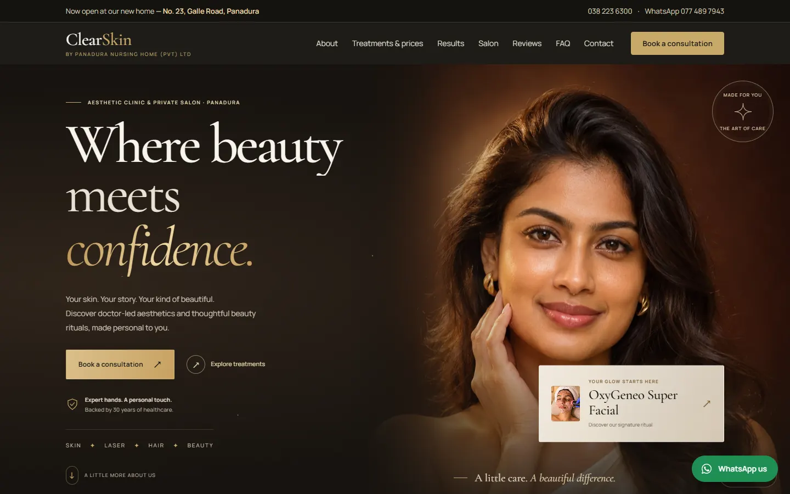
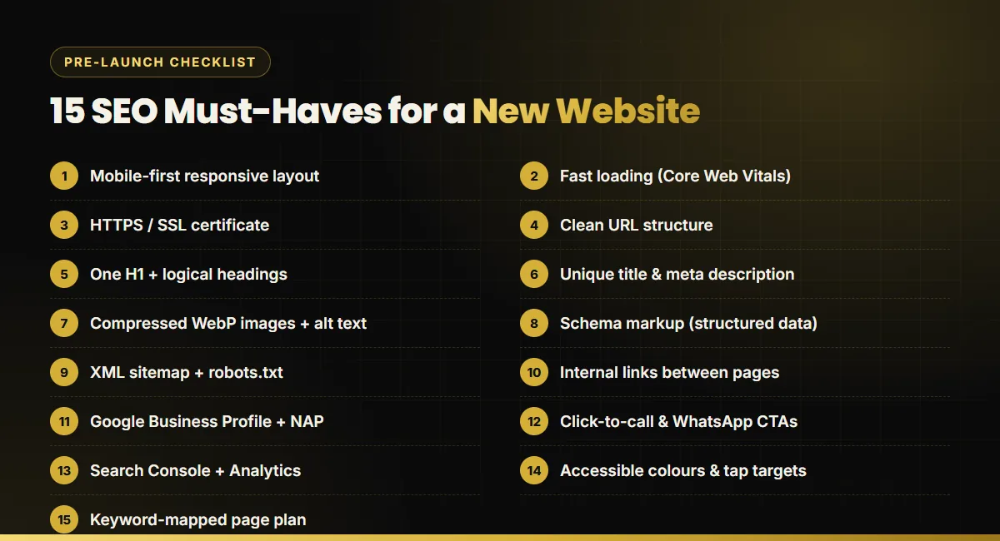

Key takeaways
- Judge a web design company by its live websites on a phone, not by mock-ups or screenshots.
- Make sure SEO, speed and mobile design are included in the price, not sold later as extras.
- The domain, hosting account and files should be in your business name.
- Get a fixed written quote that lists pages, features, timelines and yearly costs.
Search for "web design company Sri Lanka" and you will find hundreds of agencies and freelancers, all promising modern, affordable websites. Most of them can make a page look good. Far fewer can build a site that loads fast on a Sri Lankan 4G connection, ranks on Google and turns visitors into calls and WhatsApp messages. This 12-point checklist helps you tell the difference before you pay a deposit.
1–3: Check the portfolio properly
1. Look at live websites, not screenshots
Ask for links to real, live client websites. Screenshots and design mock-ups can be polished in any design tool. A live site shows the actual speed, the real mobile layout and whether the forms work. Every project in our website design portfolio links to a live website for exactly this reason.

2. Open them on your phone
Most of your customers will see your website on a phone. Open each portfolio site on your mobile and check: is the text readable without zooming? Can you tap the call and WhatsApp buttons easily? Does the menu work?
3. Look for your industry, or something close to it
A company that has built websites for clinics, construction firms, shops or service businesses already understands what those customers look for. Experience in a similar business means fewer revisions and better results.
4–6: SEO and speed must be built in
4. Ask exactly what SEO is included
"SEO friendly" is easy to claim. Ask for specifics: unique titles and meta descriptions for every page, one H1 per page, image alt text, an XML sitemap, schema markup and Google Search Console setup. Our SEO-friendly website design checklist lists the 15 items to ask about.

5. Test the speed
Run a portfolio site through Google PageSpeed Insights. Slow websites lose visitors before the page even appears, and Google uses page experience as a ranking signal. Heavy templates and too many plugins are the usual causes, which is why we custom-code every site.
6. Understand the technology
There is no single "best" platform, but the company should explain why they chose theirs. Ask whether the site is custom-coded or built on a template, who will apply security updates, and whether you will be able to edit content yourself. If you are not sure what you need, read static vs dynamic websites first.
7–9: Ownership, contracts and support
7. You must own the domain
This is the most common problem we see when businesses come to us for a redesign. The domain was registered in the designer's name, and now they cannot get it back. Insist that the domain is registered in your business name and that you have the login.
8. Get a fixed, written quote
A good quote lists the number of pages, features, number of revisions, timeline, what you need to provide, and yearly costs such as hosting renewal. Compare quotes line by line, not just on the final number. Our website cost in Sri Lanka guide explains what is fair to expect at each price.
9. Ask what happens after launch
Who fixes a broken form? Who renews hosting and SSL? How quickly do they respond? A clear support arrangement saves a lot of stress later.
10–12: Signs they care about results
10. They ask about your customers
The best web design companies ask who your customers are, what they search for and how they prefer to contact you before they talk about colours and fonts. That is the difference between a brochure and a sales tool.
11. They plan for Google from day one
Page names and structure should match what people actually search. If the company also understands local SEO in Sri Lanka and Google Business Profile, your new site can start bringing in local calls much sooner.
12. Clear communication
Fast, clear replies during the sales stage are a good sign of how the project will go. Vague answers about price or ownership are a warning sign.
Red flags to avoid
- No live portfolio links, only images.
- The domain will be "managed for you" in their name.
- A very low price with no written list of what is included.
- "Guaranteed #1 on Google" promises. Nobody can honestly guarantee rankings.
- No mobile design shown before development starts.
Questions to ask before you sign
- Can I see three live websites you built in the last year?
- Is the site custom-coded or built on a template?
- What SEO setup is included, item by item?
- Will the domain and hosting be in my name?
- What are the yearly costs after launch?
- How many design revisions are included?
If you already have a website that is not performing, start with an SEO audit to find out whether you need a redesign or just fixes. You can also compare our web design services in Sri Lanka against this checklist. We are happy to answer every question above in writing.
Compare us against this checklist
Live portfolio, custom-coded websites, SEO built in, and your domain in your name. Ask us anything.